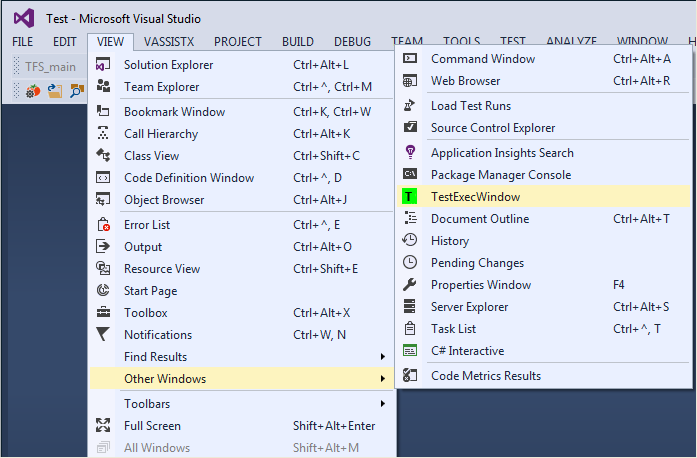
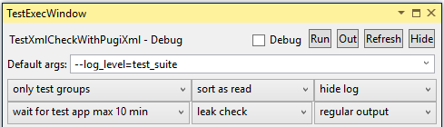
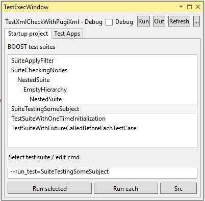

Basic functionaity
Every time you change the startup project within your Visual Studio solution TestExecWin will automatically check if there are any test cases to run. All found test cases are presented within the TestExecWindow and can there be selected for execution. TestExecWin supports BOOST.Test (and proprietary TTB) testing frameworks. Depending on the framework type appropriate command params are used for executing selected test cases. The test output is written to a special tab within the Visual Studio output pane.
Furthermore you can manage simple batch files to sequentially execute multiple test applications of arbitrary type. Their execution result is written to output pane. Optionally you can decide to automatically shutdown your computer when all tests have terminated. Before shutdown the results from output pane are saved to a logfile for later inspection.
Installation
- Within Visual Studion deinstall an old version of "TestExecWindow" if already existing.
- Close Visual Studio.
- Double-Click downloaded installation file "TestExecWin.vsix". Confirm to install the extension.
- Restart Visual Studio.
-
Open the installed window via Menu View / Other windows / TestExecWindow:

- Use the window as a free floating window or choose any pane within Visual Studio you find suited for attaching it.
User interface
Depending on your test application TestExecWin will show up similar to the following screenshot:
Upper Row: Current startup project
-
TestXmlCheckWithPugiXml - Debug
Name of current startup project and currently selected configuration
-
Checkbox "Debug"
Choose whether to start test within debugger or to execute it regularly
-
Run
Run all tests; test application is started and only default args are used
-
Out
Open test protocol file (assumption: YourTestApp.exe generates protocol file YourTestApp.out within target directory)
-
Refresh
Manually refresh of all data (e.g. when you have just added new test cases to your source code)
-
Button "..."
Show/hide additional settings
Middle part: Test suites and test cases
The left / right list contains all BOOST test suites / test cases defined in the current startup project.-
Check box "within suite"
You can decide whether to show all BOOST test cases or only those contained within the selected BOOST test suite
-
Colored status fields "FAILED/OK"
Execution status of the last test execution
-
Text field "--runTest="
Command line parameter which is automatically set when selecting one or more items within the list above. You can manually edit the parameter (e.g. for adding additional options)
-
Run selected
starts the test executable by using the commmand line above. You can select one or more test suites / test cases to be executed within a single call to your test executable
-
Run each
sequentially executes all test suites / test cases within the list above. Each list entry is executed as a separate call to your test executable. The result of each test run is displayed within log pane.
-
Src
opens the corresponding source file and jumps to the selected BOOST test case. For Boost test suites within the left list the first BOOST test case within the suite will be presented.
Lower part: Log pane
Log pane containing important status messages. The test execution itself is displayed within the regular output pane of Visual Studio.-
Checkbox "Shutdown"
When activated the termination of the selected tests will cause a saving of the log pane to a protocol file and a subsequent shutdown of your computer. The log file will be stored within the target directory of your startup application or (if there is no startup project selected) within the first temporary directory as found within environment variables TMP, TEMP or USERPROFILE. -
Clear log
Clear entries within log pane -
Copy
Copy list contents to paste buffer for later insertion as regular multiline text. -
Export
Export the list contents to a text file.
Settings
You can adjust TestExecWindow to your needs. More options for individual configuration are available via the button "..." in the upper right corner. Selecting it leads to a display of the following options:
-
Default args
define default args, which are used in addition to the args used for selecting a test suite or test case. This may be useful to activate some test behaviour common for all test suites or test cases. -
List "only test groups"
decide whether to see both test suites and contained test cases or restrict visibility to one of them -
List "sort as read"
choose an appropriate sort order -
List "hide log"
hide the log pane if not needed -
List "wait for test app max 10 min"
wait indefinitely for termination of a test or set one of several predefined time intervals -
List "leak check"
activate or deactivate checking for memory leaks. The leak check assumes that your test app will use elementary memory leak detection facilities of C runtime ("_CrtSetDbgFlag(.._CRTDBG_LEAK_CHECK_DF)"). In case of leaks the C runtime will write corresponding messages to stdout/stderr ("Detected memory leaks..."). TestExecWin will simply check test output from Visual Studio pane to decide whether leaks are existing or not. In combination with a separate run of each testcase you may identify the evil test cases. -
List "regular output"
rise output level within log pane (may be useful when looking for problems)
When the changed options from above are hidden again the configured window contains only BOOST test suites and will look like:

Batch file support
To control multiple executions of arbitrary test applications (e.g. the same test app with different start arguments or all/some test apps from your test solution) use batch file feature on tab "Test Apps". A detailed description to use this feature can be found here.Not fulfilling all your needs?
This extension is free software (GNU GENERAL PUBLIC LICENSE Version 3).Sources are available for extension, modification and correction (see Extended documentation)